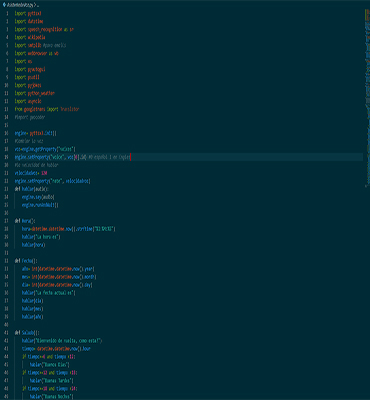
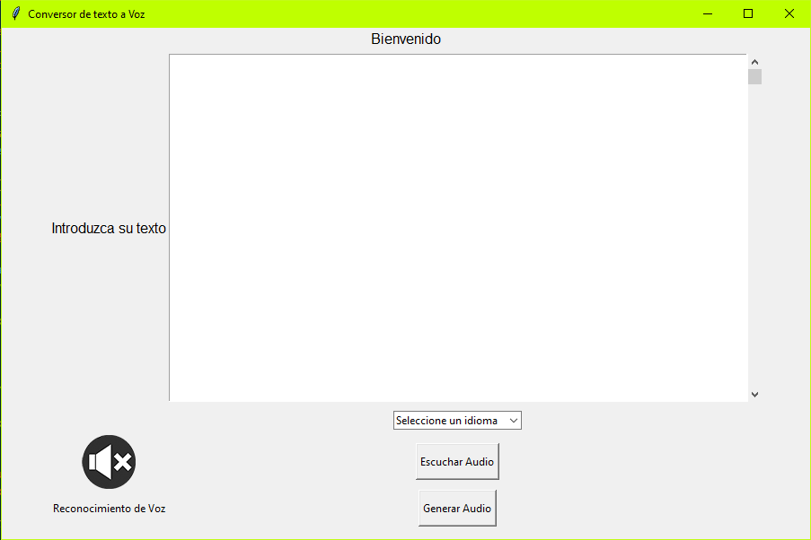
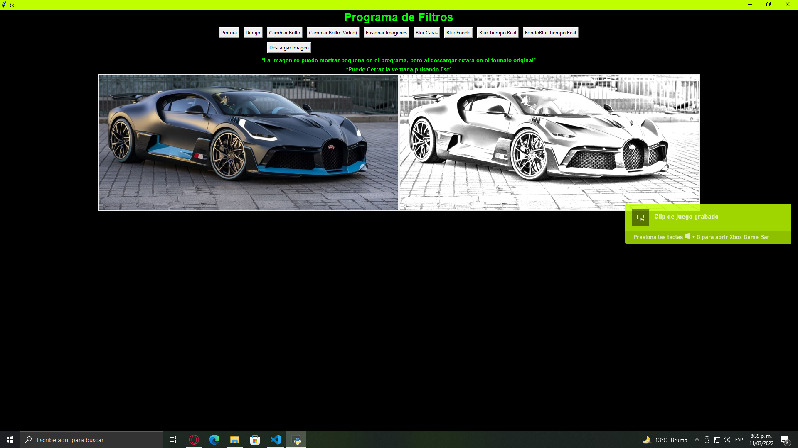
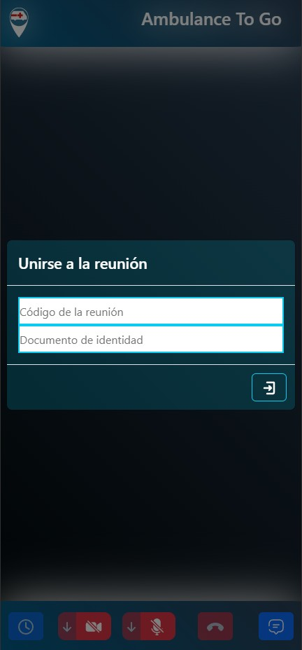
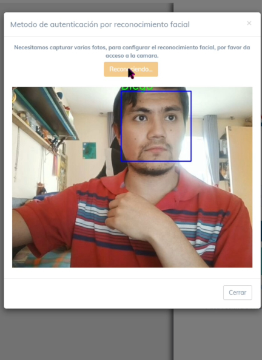
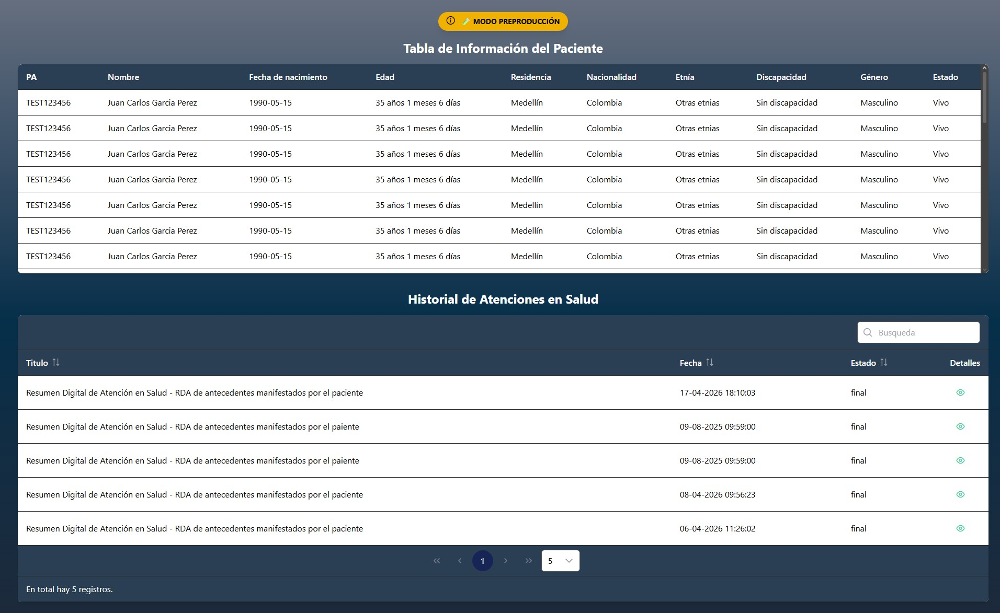

Mi Portafolio
Aqui podras encontrar mi información, ver mis proyectos, mi experencia y me podras contactar
 Scroll Down
Scroll Down
¿Quién soy yo?
Mi nombre es Diego Gutierrez Torres y soy Desarrollador en areas como el Backend, pero tambien en el area de Inteligencia Artificial.
¿Que se hacer?
Python
El lenguaje de programación que mas domino, lo he usado para desarrollo web con flask y django. Tambien para Machine-Learning. Uso librerias como Selenium, OpenCv, Sklearn, Skimage y demás.
JavaScript
Lenguaje con el que actualmente trabajo y tambien con el framework de AngularJS
PHP
Tambien trabajo con el actualmente. para las visas de un proyecto
C#
Lenguaje que vi para estructura de datos en la universidad y aprendí tambien interfaces gráficas con este.
Java
Java lo vi hace mucho, pero lo retome hace poco para un curso de desarrollo web, donde use SpringBoot, Maven y Eclipse.
Inteligencia Artificial
Una de mis areas favoritas, he realizado proyectos de Machine-Learning y visión por computadora.
HTML5
El clasico HTML5 que se tiene que usar para desarrollo web, lo he aprendido a medida que lo uso.
CSS3
El complemento a HTML5, es muy util para hacer paginas web muy dinamicas y estilizadas.
Git
El control de versiones GIT, tambien lo aprendí en la universidad y me ah sido util al desarrollar.
Bases de Datos
En bases de datos eh usado SQLite3 y PostgreSQL, actualmente trabajo con MySQL, Firebase Realtime Database y estoy aprendiendo MongoDB.
¿Que yo he hecho?

Asistente de Voz
Un asistente de voz creado en Python usando varias librerias, incluida pyttsx3, speech_recognition y demás para crear un asistente similar a Siri o Alexa.
GitHub

Convertidor Texto a Voz y Visceversa
Pequeño script en Python que usando la api de gtts y speech-recognition puede convertir el texto y leerlo, además tambien tiene la opción de hacer lo contrario convertir la voz a texto.
GitHub

Aplicador de Filtros
Este es un programa que puede aplicar diversos filtros a imagenes desde dibujo hasta fusion de imagenes en tiempo real usando opencv.
GitHub
¿Que yo he hecho?

Software de Telemedicina
Software de telemedicina desarrollado en Python-Django, ReactJS y Redis, que permite la consulta médica a distancia.
Proyecto

Sistema de reconocimiento facial para inicio de sesión
Software de reconocimiento facial para inicio de sesión en aplicaciones web.
Demo

Visor Web RDA
Software para consultar el Resumen Digital de Atención (RDA) en Colombia según Resolución 1888 de 2025. Esta aplicación permite a los usuarios acceder a la información del RDA de manera rápida y segura. Esta desarrollada en Python con el framework Flask para el backend, y ReactJS para el frontend. Utiliza autenticación segura y cumple con los estándares de privacidad de datos para garantizar la protección de la información del usuario.
Visor